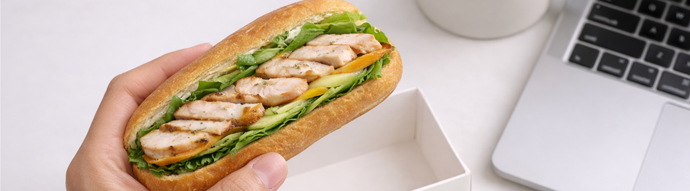

샌디가 쌓아 올리는 가치
Layered with Care
Built for Your Health
단순히 배를 채우는 빵 두 조각이 아닙니다.
신선함이 살아있는 로컬 채소부터 직접 개발한 시그니처 소스까지, 영양의 균형을 위해 겹겹이 정성을 쌓습니다.
한 입 베어 무는 순간 느껴지는 풍부한 밸런스, 샌디가 고집하는 요리의 철학입니다.
Sandie For Your Lifestyle
당신의 일상 속 샌디

Anywhere,
Anytime,
Always sandie.
언제 어디서나, 당신 곁의 샌디.
잠을 깨우는 아침 식사는 무엇보다 속이 편안해야 합니다. 샌디는 소화가 잘되는 통곡물 빵과 가벼운 스프레드를 활용하여 당신의 아침을 가뿐하고 활기차게 열어드립니다. 자극적이지 않으면서도 필수 영양소를 가득 채운 샌드위치는 바쁜 출근길에 가장 든든한 동반자가 될 것입니다. 이제 복잡한 준비 대신 샌디와 함께 가벼우면서도 확실한 에너지로 하루를 시작해 보세요.
치우기 번거로운 식사는 뒤로하고, 오직 당신의 중요한 업무와 아이디어에만 집중하세요. 한 손에 쏙 들어오는 샌디의 샌드위치는 업무 공간을 깨끗하게 유지하면서도 오후를 견딜 수 있는 고농축 에너지를 제공합니다. 철저하게 계산된 탄단지 밸런스는 식곤증 없이 최상의 컨디션을 유지할 수 있도록 돕는 스마트한 연료가 됩니다. 가장 효율적인 방식으로 당신의 프로페셔널한 일상을 샌디가 든든하게 지원하겠습니다.
건강한 라이프스타일을 유지하는 것은 결코 어려운 일이 아닙니다. 어떤 장소와 시간에서도 당신의 리듬을 방해하지 않는 샌디를 선택하는 것만으로도 당신은 오늘 하루 필요한 균형 잡힌 영양을 모두 섭취한 셈입니다. 사무실 책상 위부터 주말의 여유로운 공원 벤치까지, 샌디가 있는 곳이라면 어디든 당신만을 위한 세련된 다이닝 룸으로 변합니다. 매 순간 더 가볍고 확실한 즐거움을 선사하는 샌디와 함께 당신만의 건강한 루틴을 완성해 보세요.